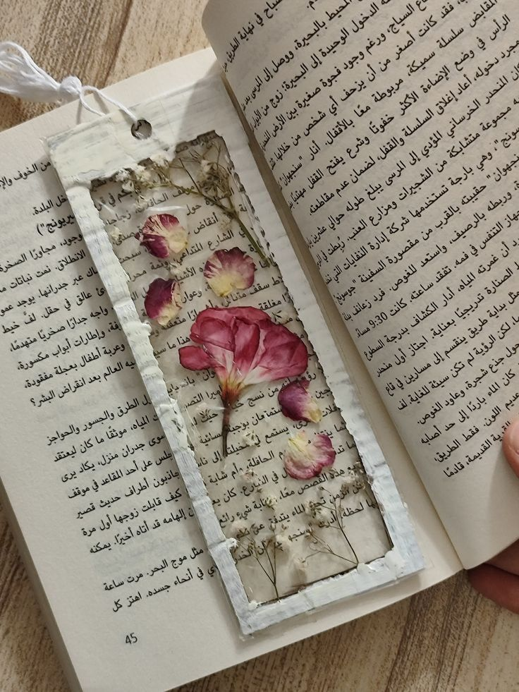
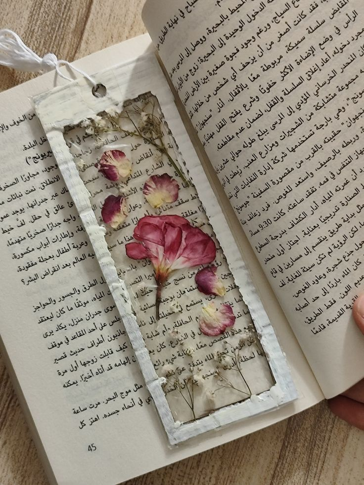

Belleza eterna: Flores prensadas
En esta pagina te mostrare una manera facil de prensar flores, asi como los materiales que yo uso y el procedimiento que
a mi me sirve.
Espero que la pagina sea de tu agrado.
Antes y después
En esta pequeña sección te muestro algunos ejemplos de como es que quedan la flores antes y después de prensarlas, esto dependiendo del metodo que quieras utilizar.

Materiales y Procedimiento
M A T E R I A L E S
- Cartón
- Papel grueso (que no sea papel plastico)
- Papel absorbente / Servilletas
- Tijeras
P R O C E D I M I E N T O
- Corta las flores que quieras prensar y corta el tallo lo más que puedas
- Corta el carton y el palel grueso a las medidas que prefieras (recomendación 30 x 30 cm)
- Ahora colocaras los materiales en el sigueinte orden: Carton, papel grueso, servilletas, flores. Luego haras el mismo procedimiento pero a la inversa, osea: servilletas, papel grueso y carton
- Para finalizar colocaras la prensa en debajo de libros pesados o en su defecto algo que tenga el mismo peso
Otras maneras de prensar
Manualidades
S t i c k e r s
S e p a r a d o r e s
 

C u a d r o s
Has llegado hasta el final, agradezco tu atencion y espero que te haya servido o al menos hecho entretenido el contenido y si lo pones en practica mandame una foto, me gustaria saber si al menos te ayude un poco.